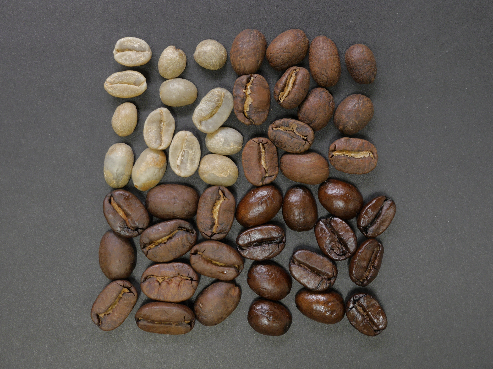

커피는 아라비카, 로부스타, 리베리카 이렇게 세 종류의 나무에서 생산됩니다.
아라비카는 좋은 향미가 풍부하고 카페인 함량이 적어 전 세계 커피 산출량의 약 70%를 차지하고 있습니다. 주요 생산국은 브라질, 콜롬비아, 멕시코, 과테말라, 에티오피아, 하와이, 인도 등이 있습니다. 마일드 종은 향기가 풍부해 스트레이트 커피에 많이 사용되고, 브라질 종은 다른 커피콩과 섞었을 때 향미가 특히 좋아지기 때문에 블렌드 커피에 많이 사용됩니다.
로부스타는 인스턴트 커피에 이용되며 베트남, 인도네시아, 우간다, 콩고, 필리핀 등에서 주로 생산됩니다. 아라비카 종과 달리 척박한 환경에서도 잘 자라는데 품질이 약간 떨어져 맛이 쓰고 거칠며 향기가 약한 편입니다. 세계 커피 수확량의 약 30%를 차지하며, 수확량이 많기 때문에 저렴한 커피의 재료로 이용되고 있습니다.
리베리카는 향기와 맛이 별로 좋지 않은데다 전체 산출량이 1%도 되지 않아 주요 생산국에서 현지 소모되고 있습니다.
